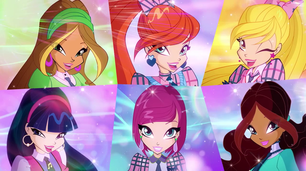
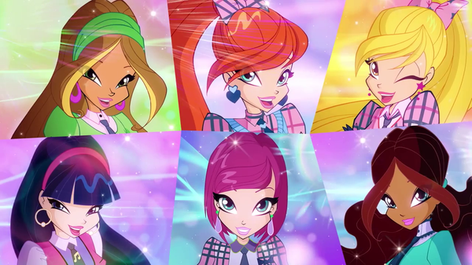

Добро пожаловать на сайт о феях Винкс!
Феи Винкс - это популярная анимационная серия, рассказывающая о приключениях молодых волшебниц в Магической школе Алфея. Вашему вниманию предоставляется уникальная возможность ознакомиться с героями этой захватывающей истории!
Основные персонажи
-
Bloom
Блум - главная героиня, она является феей огня и лидером группы Винкс.
-

Stella
Стелла - фея солнца и лучшая подруга Блум. Она обладает способностью контролировать свет и модной одеждой.
-
Flora
Флора - фея природы. Она обожает растения и всегда готова помочь другим.
Галерея(базовая)
 


Контакты
Если у вас есть вопросы или предложения, свяжитесь с нами:
- Email: fairywinks@example.com
- Телефон: +123456789
- Адрес: Магическая школа Алфея, Страна Фей